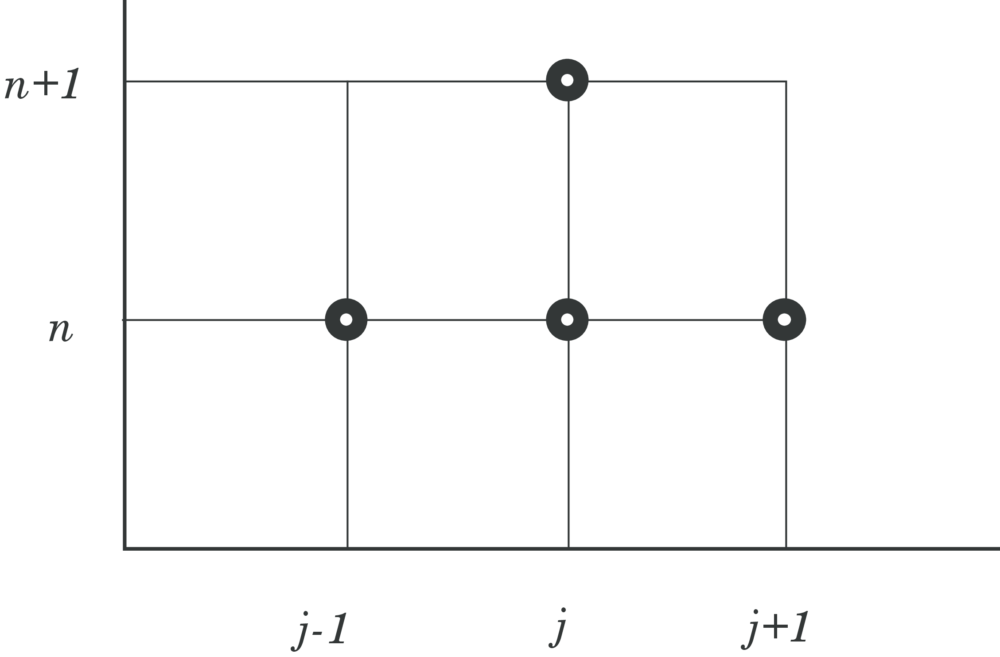
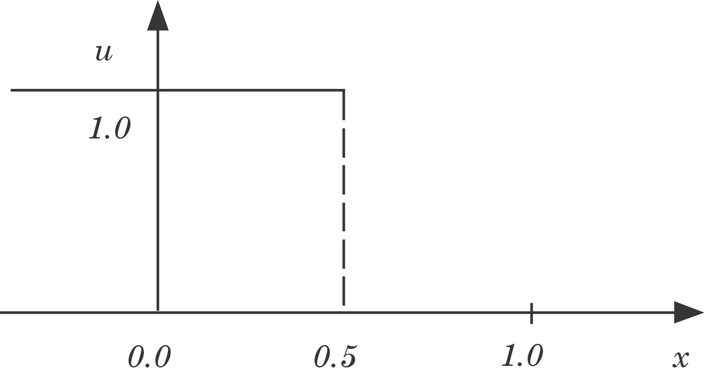
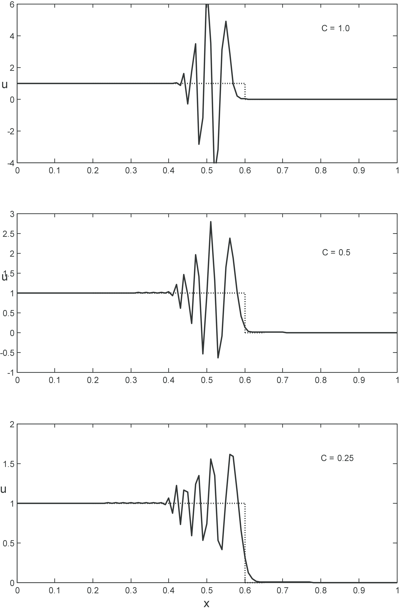

Chapter 6: Convection problems and hyperbolic PDEs
The advection equation
The classical advection equation is very often used as an example of a hyperbolic partial differential equation which illustrates many features of convection problems, while still being linear: $$ \begin{equation} \tag{76} \frac{\partial u}{\partial t} + a_0 \frac{\partial u}{\partial x} = 0 \end{equation} $$Another convenient feature of the model equation (76) is that is has an analytical solution: $$ \begin{equation}\tag{77} u = u_0 \, f(x-a_0\,t ) \end{equation} $$ and represents a wave propagating with a constant velocity \( a_0 \) with unchanged shape. When \( a_0 > 0 \), the wave propagates in the positive x-direction, whereas for \( a_0 < 0 \), the wave propagates in the negative x-direction.
Equation (76) may serve as a model-equation for a compressible fluid, e.g if \( u \) denote pressure it represents a pressure wave propagating with the velocity \( a_0 \). The advection equation may also be used to model the propgation of pressure or flow in a compliant pipe, such as a blood vessel.
To allow for generalization we will also when appropriate write (76) on the following form: $$ \begin{equation} \frac{\partial u}{\partial t} + \frac{\partial F}{\partial x} = 0 \tag{78} \end{equation} $$ where for the linear advection equation \( F(u) = a_0\; u \).
Forward in time central in space discretization
We may discretize (76) with a forward difference in time and a central difference in space, normally abberviated as the FTCS-scheme: $$ \begin{equation*} \tag{79} \frac{\partial u}{\partial t} \approx \frac{u_j^{n+1}-u_j^n}{\Delta t}, \qquad \frac{\partial u}{\partial x}\approx \frac{u_{j+1}^n-u_{j-1}^n}{2 \Delta x} \end{equation*} $$ and we may substitute the approximations (79) into the advection equation (76) to yield: $$ \begin{equation} \tag{80} u_j^{n+1} = u_j^n - \frac{C}{2}(u_{j+1}^n-u_{j-1}^n) \end{equation} $$ For convenience we have introduced the non-dimensional Courant-Friedrich-Lewy number (or CFL-number for short): $$ \begin{equation} \tag{81} C = a_0\frac{\Delta t}{\Delta x} \end{equation} $$
The scheme in (80) is first order in time and second order in space (i.e. \( (O(\Delta t) + O(\Delta x^2)) \)), and explicit in time as can bee seen both from Fig. (14) and (80).
Figure 14: Illustration of the first order in time central in space scheme.

We will try to solve model equation (76) with the scheme (80) and initial conditions illustrated in Fig 15 with the mathematical representation: $$ \begin{equation*} \begin{array}{c} u(x,0) = 1 \text{ for } x < 0.5\\ u(x,0) = 0 \text{ for } x > 0.5 \end{array} \end{equation*} $$
Figure 15: Initial values for the advection equaution (76).

Solutions for three CFL-numbers: C=0.25, 0.5 and 1.0 are illustrated in Fig. (16). Large oscillations are observed for all values of the CFL-number, even though they seem to be sligtly reduced for smaller C-values,; thus we have indications of an unstable scheme. As a first approach observe that the coefficient for \( u^n_{j+1} \) in (80) always will be negative, and thus the criterion of positive coefficients (PC-criterion) may not be satisfied for any value of \( C \).
Figure 16: Computed solutions with the (80). Dotted line: analytical solution, solid line: computed soultion.

However, as we know that the PC-criterion may be too strict in some cases, we proceed with a von Neumann analysis by introducing the numerical amplification factor \( G^n \) for the error \( E^n_j \) in the numerical scheme to be analyzed $$ \begin{equation} \tag{82} u^n_j\to E^n_j=G^n\cdot e^{i\cdot \beta x_j} \end{equation} $$ Substitution of (82) into (80) yields: $$ \begin{equation*} G^{n+1}e^{i\cdot \beta \cdot x_j} = G^ne^{i \cdot \beta \cdot x_j}-\frac{C}{2}\left(G^ne^{i\cdot \beta x_{j+1}}- G^ne^{i\cdot \beta x_{j-1}}\right) \end{equation*} $$ which after division with \( G^ne^{i\cdot \beta \cdot x_j} \) and introduction of the simplified notation \( \delta = \beta \cdot h \) yields: $$ \begin{equation*} G = 1 - \frac{C}{2}\left(e^{i\cdot \beta h}-e^{-i \cdot \beta h}\right) = 1 - i \cdot C \sin(\delta) \end{equation*} $$ where the trigonometric relations: $$ \begin{align} \tag{83} &2\cos(x)=e^{ix}+e^{-ix}\\ &i\cdot 2\sin(x)=e^{ix}-e^{-ix}\\ &\cos(x)=1-2\sin^2(\frac{x}{2}) \end{align} $$
have been introduced for convenience. Finally, we get the following expression for the numerical ampliciation factor: $$ \begin{equation*} |G|=\sqrt{1+C^2\sin^2(\delta)} \geq 1 \text{ for all } C \text{ and } \delta \end{equation*} $$ and concequently the FTCS-scheme is unconditionally unstable for the advection equation and is thus not a viable scheme. Even a very small value of C will not suffice to dampe the oscillations.
The Lax-Friedrich Scheme
Lax-Friedrichs scheme is an explicit, first order scheme, using forward difference in time and central difference in space. However, the scheme is stabilized by averaging \( u^n_i \) over the neighbour cells in the in the temporal approximation: $$ \begin{equation} \frac{u_i^{n+1}-\frac{1}{2}(u^n_{i+1}+u^n_{i-1})}{\Delta t} = -\frac{F^n_{i+1}-F^n_{i-1}}{2 \Delta x} \tag{84} \end{equation} $$ The Lax-Friedrich scheme is the obtained by isolation \( u^{n+1}_i \) at the right hand side: $$ \begin{equation} u_i^{n+1} = \frac{1}{2}(u^n_{i+1}+u^n_{i-1}) - \frac{\Delta t}{2 \Delta x}(F^n_{i+1}-F^n_{i-1}) \label{} \end{equation} $$
By assuming a linear flux \( F=a_0 \, u \) it may be shown that the Lax-Friedrich scheme takes the form: $$ \begin{equation} u_i^{n+1} = \frac{1}{2}(u^n_{i+1}+u^n_{i-1}) - \frac{C}{2}(u^n_{i+1}-u^n_{i-1}) \label{} \end{equation} $$ where we have introduced the CFL-number as given by (81) and have the simple python-implementation:
def lax_friedrich(u):
u[1:-1] = (u[:-2] +u[2:])/2.0 - c*(u[2:] - u[:-2])/2.0
return u[1:-1]
whereas a more generic flux implementation is implemented as:
def lax_friedrich_Flux(u):
u[1:-1] = (u[:-2] +u[2:])/2.0 - dt*(F(u[2:])-F(u[:-2]))/(2.0*dx)
return u[1:-1]
Lax Wendroff Schemes
These schemes were proposed in 1960 by P.D. Lax and B. Wendroff [7] for solving, approximately, systems of hyperbolic conservation laws on the generic form given in (78).
A large class of numerical methods for solving (78) are the so-called conservative methods: $$ \begin{equation} u_j^{n+1} = u_j^{n} + \frac{\Delta t}{\Delta x} \left ( F_{i-1/2} - F_{i+1/2} \right ) \tag{85} \end{equation} $$
Linear advection
The Lax–Wendroff method belongs to the class of conservative schemes (78) and can be derived in various ways. For simplicity, we will derive the method by using a simple model equation for (78), namely the linear advection equation with \( F(u)=a\,u \) as in (76), where \( a \) is a constant propagation velocity. The Lax-Wendroff outset is a Taylor approximation of \( u_j^{n+1} \): $$ \begin{equation} u_j^{n+1}=u_j^n+\Delta t \frac{\partial u}{\partial t}\Bigg|_j^n + \frac{(\Delta t)}{2}\frac{\partial^2u}{\partial t^2}\Bigg|_j^n+\cdots \tag{86} \end{equation} $$ From the differential equation (78) we get by differentiation $$ \begin{equation} \begin{array}{c} \dfrac{\partial u}{\partial t}\Bigg|_j^n = -a_0\dfrac{\partial u}{\partial x}\Bigg|_j^n \qquad \text{ and} \qquad \dfrac{\partial^2u}{\partial t^2}\Bigg|_j^n = a_0^2\dfrac{\partial^2u}{\partial x^2}\Bigg|_j^n \end{array} \tag{87} \end{equation} $$ Before substitution of (87) in the Taylor expansion (86) we approximate the spatial derivatives by central differences: $$ \begin{equation} \dfrac{\partial u}{\partial x}\Bigg|_j^n \approx \dfrac{u_{j+1}^n-u_{j-1}^n}{(2\Delta x)} \qquad \text{ and } \qquad \dfrac{\partial^2u}{\partial x^2}\Bigg|_j^n \approx \dfrac{u_{j+1}^n -2u_j^n + u_{j-1}^n}{(\Delta x)^2} \tag{88} \end{equation} $$ and then the Lax-Wendroff scheme follows by substitution: $$ \begin{equation} \tag{89} u_j^{n+1}=u_j^n-\frac{C}{2}\left( u_{j+1}^n-u_{j-1}^n \right) + \frac{C^2}{2}\left( u_{j+1}^n - 2u_j^n+u_{j-1}^n \right) \end{equation} $$ with the local truncation error \( T_j^n \): $$ \begin{equation} T_j^n = \frac{1}{6}\cdot \left[ (\Delta t)^2 \frac{\partial^3u}{\partial t^3} + a_0(\Delta x)^2 \frac{\partial^3u}{\partial x^3}\right]_j^n = O[(\Delta t)^2,(\Delta x)^2] \label{} \end{equation} $$ The resulting difference equation in (89) may also be formulated as: $$ \begin{equation} \tag{90} u_j^{n+1} = \frac{C}{2}(1+C)u_{j-1}^n + (1-C^2)u_j^n - \frac{C}{2}(1-C)u_{j+1}^n \end{equation} $$
The explicit Lax Wendroff stenticl is illustrated in Fig. (17)
Figure 17: Schematic of the Lax-Wendroff scheme.

An example of how to implement the Lax-Wendroff scheme is given as follows:
def lax_wendroff(u):
u[1:-1] = c/2.0*(1+c)*u[:-2] + (1-c**2)*u[1:-1] - c/2.0*(1-c)*u[2:]
return u[1:-1]
Lax-Wendroff for non-linear systems of hyperbolic PDEs
For non-linear equations (78) the Lax–Wendroff method is no longer unique and naturally various methods have been suggested. The challenge for a non-linear \( F(u) \) is that the substitution of temporal derivatives with spatial derivatives (as we did in (87)) is not straightforward and unique.
Ricthmyer Scheme One of the earliest extensions of the scheme is the Richtmyer two-step Lax–Wendroff method, which is on the conservative form (85) with the numerical fluxes computed as follows: $$ \begin{align} &u_{j+1/2}^{n+1/2} = \frac{1}{2} \left (u_{j}^{n} + u_{j+1}^{n} \right ) + \frac{1}{2} \frac{\Delta t}{\Delta x} \left (F_j^n - F_{j+1}^n \right )\\ & F_{j+1/2} = F(u_{j+1/2}^{n+1/2}) \end{align} $$
Lax-Wendroff two step
A Lax-Wendroff two step method is outlined in the following. In the first step \( u(x, t) \) is evaluated at half time steps \( n + 1/2 \) and half grid points \( j+1/2 \). In the second step values at the next time step \( n + 1 \) are calculated using the data for \( n \) and \( n + 1/2 \).
First step: $$ \begin{align} & u_{j+1/2}^{n+1/2} = \frac{1}{2} \left (u_{j+1}^{n} + u_{j}^{n} \right ) - \frac{\Delta t}{2 \Delta x} \left (F(u_{j+1}^{n}) - F(u_{j}^{n}) \right ) \\ & u_{j-1/2}^{n+1/2} = \frac{1}{2} \left (u_{j}^{n} + u_{j-1}^{n} \right ) - \frac{\Delta t}{2 \Delta x} \left (F(u_{j}^{n}) - F(u_{j-1}^{n}) \right ) \tag{91} \end{align} $$
Second step: $$ \begin{equation} u_{j}^{n+1} = u_{j}^{n} - \frac{\Delta t}{\Delta x} \left ( F(u_{j+1/2}^{n+1/2}) - F(u_{j-1/2}^{n+1/2}) \right ) \tag{92} \end{equation} $$
Notice that for a linear flux \( F=a_0 \, u \), the two-step Lax-Wendroff method ((91) and (92)) may be shown to reduce to the one-step Lax-Wendroff method outlined in (89) or (90).
MacCormack Scheme
A simpler and popular extension/variant of Lax-Wendroff schemes like in the previous section, is the MacCormack scheme [8]: $$ \begin{align} & u_j^p =u_j^n + \frac{\Delta t}{\Delta x} \left (F_{j}^{n} - F_{j+1}^{n} \right ) \\ & u_j^{n+1} =\frac{1}{2} \left (u_{j}^{n} + u_{j}^{p} \right ) + \frac{1}{2} \frac{\Delta t}{\Delta x} \left (F_{j-1}^{p} - F_{j}^{p} \right ) \\ \tag{93} \end{align} $$
where we have introduced the convention \( F_{j}^{p}=F(u_{j}^{p}) \).
Note that in the predictor step we employ the conservative formula (85) for a time \( \Delta t \) with forward differencing, i.e. . \( F_{j+1/2} = F^n_{j+1}=F(u^n_{j+1}) \). The corrector step may be interpreted as using (85) for a time \( \Delta t/2 \) with initial condition \( \frac{1}{2} \left (u_{j}^{n} + u_{j+1}^{p} \right ) \) and backward differencing.
Another MacCormack scheme may be obtained by reversing the predictor and corrector steps. Note that the MacCormack scheme (93) is not written in conservative form (85). However, it easy to express the scheme in conservative form by expressing the flux in (85) as: $$ \begin{equation} F_{j+1}^{m} = \frac{1}{2} \left (F_j^p + F_{j+1}^n \right ) \label{} \end{equation} $$
For a linear flux \( F(u) = a_0 \, u \), one may show that the MacCormack scheme in (93) reduces to a two-step scheme: $$ \begin{align} & u_j^p = u_j^n + C \left ( u_j^n - u_{j+1}^n \right ) \tag{94}\\ & u_j^{n+1} = \frac{1}{2} \left ( u_j^n + u_j^p \right )+ \frac{C}{2} \left ( u_{j-1}^p - u_{j}^p \right ) \tag{95} \end{align} $$
and substitution of (94) into (95) shows that the MacCormack scheme is identical to the Lax-Wendroff scheme (90) for the linear advection flux. A python implementation is given by:
def macCormack(u):
up = u.copy()
up[:-1] = u[:-1] - c*(u[1:]-u[:-1])
u[1:] = .5*(u[1:]+up[1:] - c*(up[1:]-up[:-1]))
return u[1:-1]
Code example for various schemes for the advenction equation
A complete example showing how a range of hyperbolic schemes are implemented and applied to a particular example:
# ../Kap6/advection_schemes.py
import numpy as np
import matplotlib.pyplot as plt
from matplotlib import animation
from scipy import interpolate
from numpy import where
from math import sin
LNWDT=2; FNT=15
plt.rcParams['lines.linewidth'] = LNWDT; plt.rcParams['font.size'] = FNT
a = 1.0 # wave speed
tmin, tmax = 0.0, 1.0 # start and stop time of simulation
xmin, xmax = 0.0, 1.0 # start and end of spatial domain
Nx = 80 # number of spatial points
c = 0.9 # courant number, need c<=1 for stability
init_func=0 # Select stair case function (0) or sin^2 function (1)
# function defining the initial condition
if (init_func==0):
def f(x):
"""Assigning a value of 1.0 for values less than 0.1"""
f = np.zeros_like(x)
f[np.where(x <= 0.1)] = 1.0
return f
elif(init_func==1):
def f(x):
"""A smooth sin^2 function between x_left and x_right"""
f = np.zeros_like(x)
x_left = 0.25
x_right = 0.75
xm = (x_right-x_left)/2.0
f = where((x>x_left) & (x<x_right), np.sin(np.pi*(x-x_left)/(x_right-x_left))**4,f)
return f
def ftbs(u): # forward time backward space
u[1:-1] = (1-c)*u[1:-1] + c*u[:-2]
return u[1:-1]
# Lax-Wendroff
def lax_wendroff(u):
u[1:-1] = c/2.0*(1+c)*u[:-2] + (1-c**2)*u[1:-1] - c/2.0*(1-c)*u[2:]
return u[1:-1]
# Lax-Friedrich Flux formulation
def lax_friedrich_Flux(u):
u[1:-1] = (u[:-2] +u[2:])/2.0 - dt*(F(u[2:])-F(u[:-2]))/(2.0*dx)
return u[1:-1]
# Lax-Friedrich Advection
def lax_friedrich(u):
u[1:-1] = (u[:-2] +u[2:])/2.0 - c*(u[2:] - u[:-2])/2.0
return u[1:-1]
# macCormack for advection quation
def macCormack(u):
up = u.copy()
up[:-1] = u[:-1] - c*(u[1:]-u[:-1])
u[1:] = .5*(u[1:]+up[1:] - c*(up[1:]-up[:-1]))
return u[1:-1]
# Discretize
x = np.linspace(xmin, xmax, Nx+1) # discretization of space
dx = float((xmax-xmin)/Nx) # spatial step size
dt = c/a*dx # stable time step calculated from stability requirement
Nt = int((tmax-tmin)/dt) # number of time steps
time = np.linspace(tmin, tmax, Nt) # discretization of time
# solve from tmin to tmax
#solvers = [ftbs,lax_wendroff,lax_friedrich,macCormack]
#solvers = [ftbs,lax_wendroff,macCormack]
#solvers = [ftbs,lax_wendroff]
solvers = [ftbs,lax_friedrich]
u_solutions=np.zeros((len(solvers),len(time),len(x)))
uanalytical = np.zeros((len(time), len(x))) # holds the analytical solution
for k, solver in enumerate(solvers): # Solve for all solvers in list
u = f(x)
un = np.zeros((len(time), len(x))) # holds the numerical solution
for i, t in enumerate(time[1:]):
if k==0:
uanalytical[i,:] = f(x-a*t) # compute analytical solution for this time step
u_bc = interpolate.interp1d(x[-2:], u[-2:]) # interplate at right bndry
u[1:-1] = solver(u[:]) # calculate numerical solution of interior
u[-1] = u_bc(x[-1] - a*dt) # interpolate along a characteristic to find the boundary value
un[i,:] = u[:] # storing the solution for plotting
u_solutions[k,:,:] = un
### Animation
# First set up the figure, the axis, and the plot element we want to animate
fig = plt.figure()
ax = plt.axes(xlim=(xmin,xmax), ylim=(np.min(un), np.max(un)*1.1))
lines=[] # list for plot lines for solvers and analytical solutions
legends=[] # list for legends for solvers and analytical solutions
for solver in solvers:
line, = ax.plot([], [])
lines.append(line)
legends.append(solver.func_name)
line, = ax.plot([], []) #add extra plot line for analytical solution
lines.append(line)
legends.append('Analytical')
plt.xlabel('x-coordinate [-]')
plt.ylabel('Amplitude [-]')
plt.legend(legends, loc=3, frameon=False)
# initialization function: plot the background of each frame
def init():
for line in lines:
line.set_data([], [])
return lines,
# animation function. This is called sequentially
def animate(i):
for k, line in enumerate(lines):
if (k==0):
line.set_data(x, un[i,:])
else:
line.set_data(x, uanalytical[i,:])
return lines,
def animate_alt(i):
for k, line in enumerate(lines):
if (k==len(lines)-1):
line.set_data(x, uanalytical[i,:])
else:
line.set_data(x, u_solutions[k,i,:])
return lines,
# call the animator. blit=True means only re-draw the parts that have changed.
anim = animation.FuncAnimation(fig, animate_alt, init_func=init, frames=Nt, interval=100, blit=False)
plt.show()
Example 10: Burgers equation
The 1D Burgers equation is a simple (if not the simplest) non-linear hyperbolic equation commonly used as a model equation to illustrate various numerical schemes for non-linear hyperbolic differential equations. It is normally prestented as: $$ \begin{equation} \frac{\partial u}{\partial t} + u \frac{\partial u}{\partial x} = 0 \tag{96} \end{equation} $$
To enable us to present schemes for a greater variety of hyperbolic differenctial equations and to better handle shocks (i.e discontinuities in the solution), we will present our model equation on conservative form: $$ \begin{equation} \frac{\partial u}{\partial t} + \frac{\partial }{\partial x} \left (\frac{u^2}{2} \right) = 0 \tag{97} \end{equation} $$ and by introducing a flux function $$ \begin{equation} F(u) = \frac{u^2}{2} \tag{98} \end{equation} $$
the conservative formulation of the Burgers equation may be represented by a generic transport equation: $$ \begin{equation} \frac{\partial u}{\partial t} + \frac{\partial F(u)}{\partial x} = 0 \tag{99} \end{equation} $$